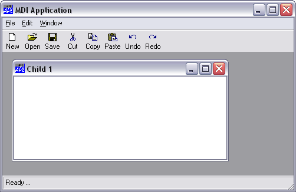
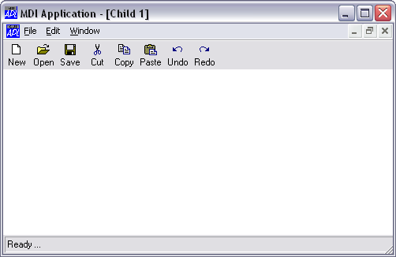

MDI Behaviour
- All child forms are displayed within the MDIClient. Forms may be moved and resized but they are restricted to the MDIClient and will be clipped if they extend beyond it.
- When a child form is minimised, its icon appears on the MDIClient rather than on the desktop.
- When a SubForm is maximised, its Caption is combined with the Caption of the parent Form, i.e. the parent of the MDIClient object and is displayed in the parent Form's title bar. In addition, the SubForm's system menu and restore button are displayed in the parent Form's MenuBar.
- You cannot hide a SubForm. Setting its Visible property to 0 has no effect.
- A SubForm does not display its MenuBar. Instead, it is displayed in place of the parent Form's MenuBar when the SubForm has the focus.


The effect of maximising a SubForm